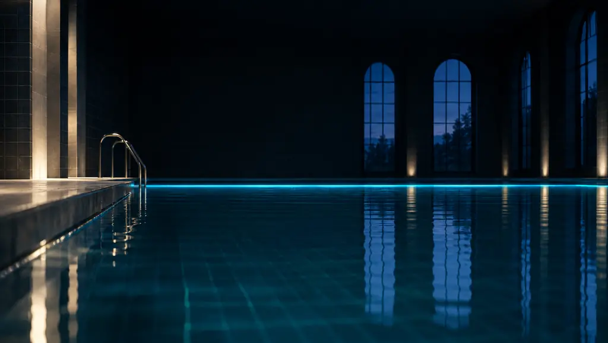

VARIANTE 06 · BEFUND
Befund
Die Website als Befundblatt: nummerierte Paragraphen, eine Messlinie im Header, Abbildungen mit Legende und eine Wasser-Szene, die beim Scrollen steigt. Lighthouse Mobile: Performance 97, Barrierefreiheit, Best Practices und SEO je 100.
- Archivo + Instrument Sans
- Befund-Konzept
- Hallenbad